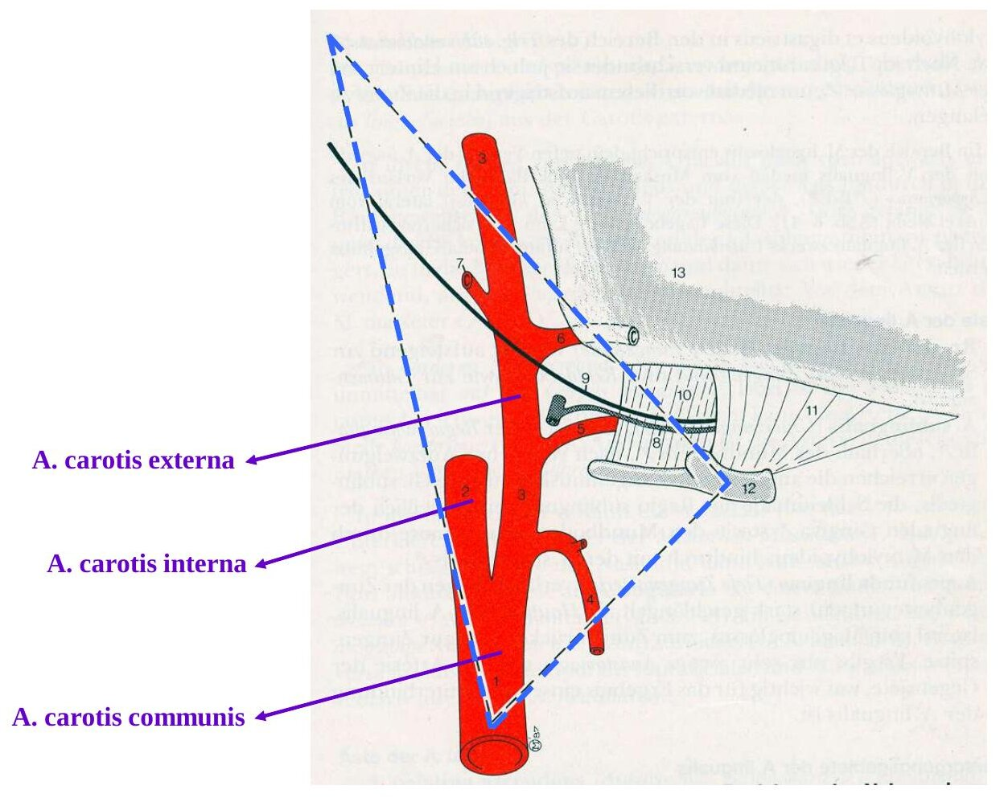
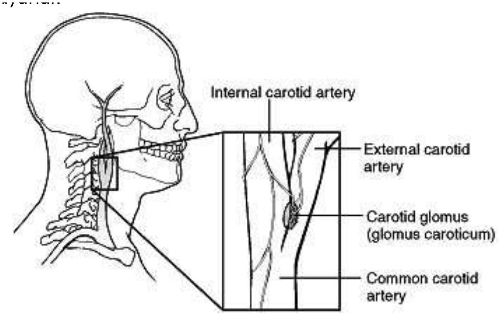
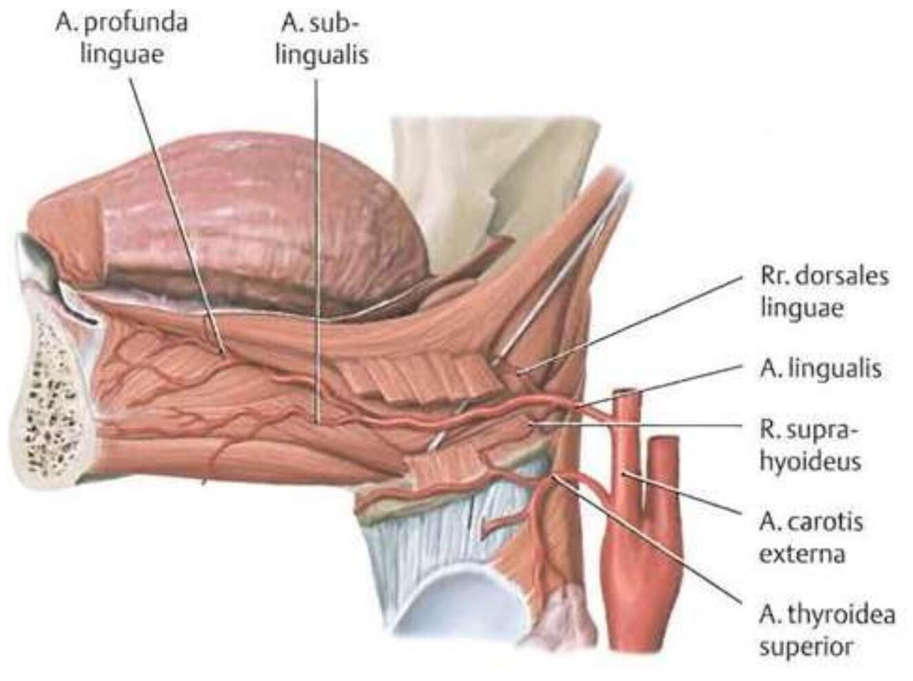
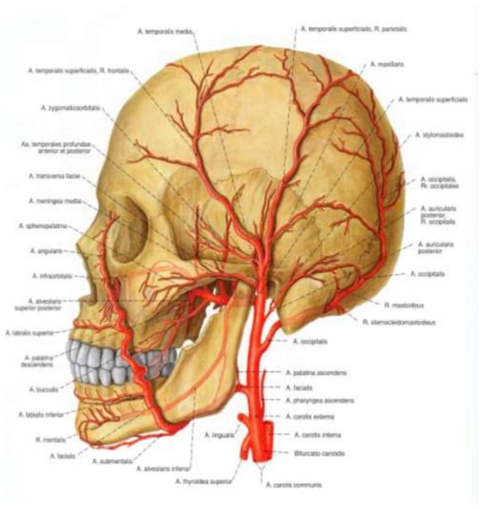
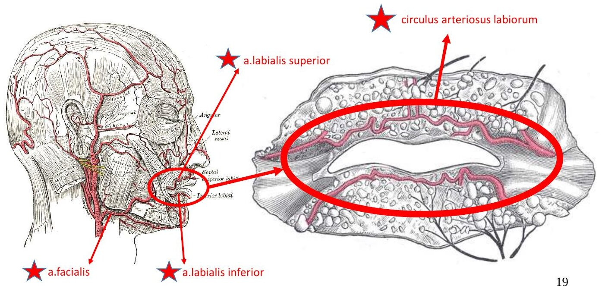
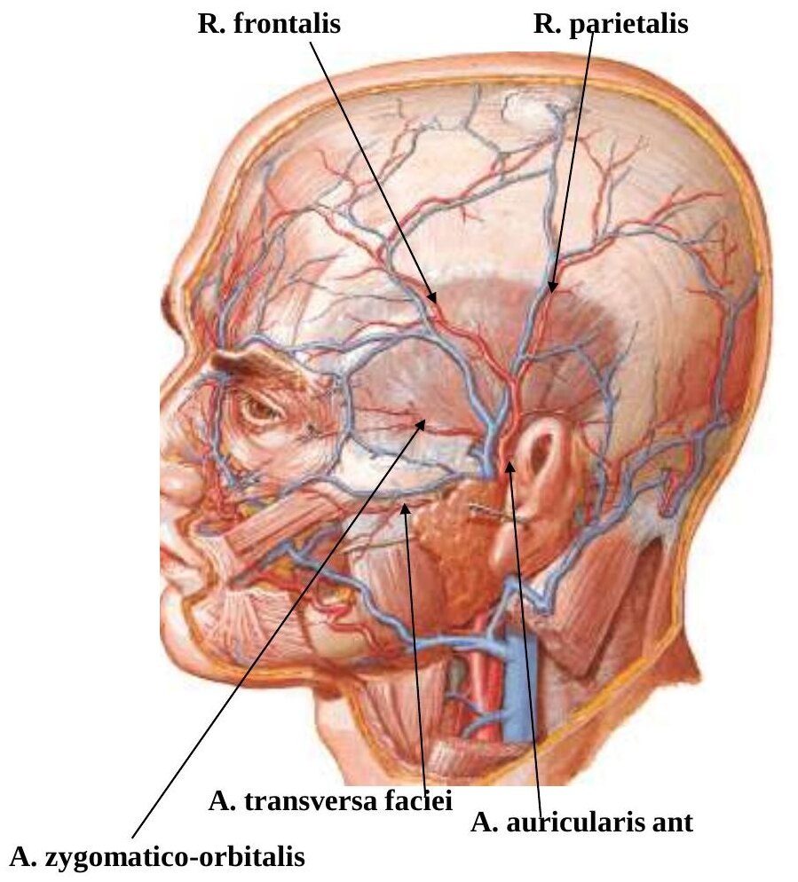
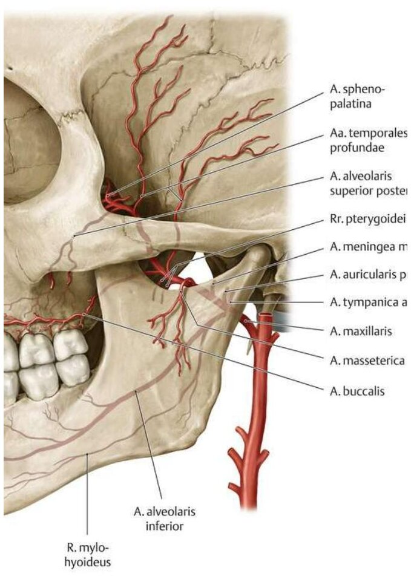
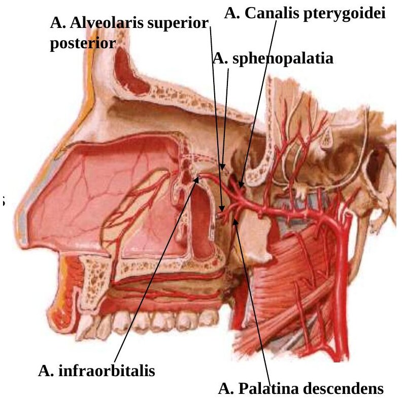

Bölüm 8 · Arteriae capitis et colli
Baş ve boyun iki arter sisteminden beslenir: beyni ve gözü besleyen a. carotis interna ile a. vertebralis, kafatasının dışını, yüzü, ağız ve burun boşluklarını, dişleri ve kafa içindeki dura mater'i besleyen a. carotis externa. Bu bölüm iki sistemi besleyen ortak gövdeyi (a. carotis communis), çatallanma yerindeki basınç ve kimyasal reseptörleri ve a. carotis externa'nın sekiz dalını anlatır. Dalların her birini tek tek ezberlemek yerine, her dalın hangi bölgeye neden o yoldan gittiğini ve hangi bölgenin birden fazla daldan beslendiğini görmek, sınavda sorulan "hangisi X'e dal vermez?" sorularının anahtarıdır.
Sağ ve sol a. carotis communis'in uzunlukları ve çıkış yerleri farklıdır. Sağ a. carotis communis sağ art. sternoclavicularis'in arkasında truncus brachiocephalicus'tan çıkar. Sol a. carotis communis doğrudan arcus aortae'nin en yüksek kısmından ayrılır. Bu yüzden solun önce göğüste, mediastinum superius'ta seyreden bir bölümü vardır ve boyna sol art. sternoclavicularis'in arkasından girer. Boyundan sonra iki tarafın seyri aynıdır. Gelişimde iki a. carotis communis ve a. carotis interna'nın başlangıç kısmı üçüncü faringeal arkus arterinden oluşur (2023-2024 embriyoloji S5: "ortak karotid arter 5. faringeal arkustan oluşur" ifadesi yanlıştı).
Boyunda a. carotis communis, lateralindeki v. jugularis interna ve ikisinin arasında, arkada kalan n. vagus ile birlikte vagina carotica denen bağ dokusu kılıfının içinde yükselir. Bu kılıf boynun damar-sinir paketidir. Kılıfın arkasında truncus sympathicus bulunur. A. carotis communis boyunda dal vermez. Cartilago thyroidea'nın üst kenarı düzeyinde (yaklaşık C4 vertebra, mandibulanın alt kenarının 3 cm aşağısı) a. carotis interna ve a. carotis externa olarak iki uç dalına ayrılır. Çatallanmanın düzeyi kişiden kişiye C3 ile C5 arasında değişebilir.
Çatallanma yeri boynun ön bölgesinde trigonum caroticum'dadır. Bu üçgeni üç kas sınırlar: arkada m. sternocleidomastoideus'un ön kenarı, üstte m. digastricus'un arka karnı, önde-altta m. omohyoideus'un üst karnı (Şekil 8.1). Üçgende damarların üzerini yalnızca deri, platysma ve yüzeyel fasya örter. Cerrahların karotis arterlere ulaştığı ve klinisyenlerin karotis nabzını aldığı yer burasıdır.
Karotis nabzı. Sunumun tarifiyle arter, trakea ile hyoid altı kasları arasında kalan dikey olukta seyreder. Nabzı almak için parmak uçları trakeanın üstüne konur, sonra hafifçe yana kaydırılıp trakeaya doğru bastırılır. Karotis nabzının alınamaması kalp durmasının (kardiyak arrest) işaretidir ve hemen müdahale gerektirir. Nabız tek tarafta alınır. İki taraf birlikte bastırılırsa beyne giden kan azalır ve sinus caroticus'un uyarılması kalbi yavaşlatabilir (8.2).


Sinus caroticus a. carotis communis'in iki uç dalına ayrıldığı noktadaki genişlemedir. Genişleme a. carotis interna'nın başlangıç kısmında da devam eder. Duvarında tunica media incedir, adventitia ise gerilmeye duyarlı sinir uçlarıyla doludur. Burası bir basınç reseptörüdür (baroreseptör). Uçlar n. glossopharyngeus'un sinus caroticus dalıyla (Hering siniri) medulla oblongata'daki nucleus tractus solitarii'ye bağlanır, oradan da vazomotor merkeze (Bölüm 5.2) bilgi gider. Refleks adım adım şöyle işler:
Tersi de geçerlidir. Yatan bir kişi aniden ayağa kalktığında kan bacak venlerinde göllenir, kalbe dönen kan ve arter basıncı düşer. Sinüsün gerilmesi azalınca ateşleme seyrekleşir, medulla sempatik sistemi saniyeler içinde aktive eder, kalp hızlanır, damarlar daralır ve basınç yükselir (Derleme fizyoloji S17 ve 2024-2025: ortostatik hipotansiyonda devreye giren mekanizma baroreseptörlerdir). Sunumdaki ifadeyle sinüs, basınç değişikliklerine göre refleks olarak beyne giden kan miktarını ayarlar. Klinikte bu refleks iki biçimde karşımıza çıkar. Boyunda sinüsün üzerine yapılan masaj vagal etkiyle bazı hızlı ritim bozukluklarını sonlandırabilir. Sinüsü aşırı duyarlı kişilerde ise sıkı bir yaka ya da başı çevirmek bile ani bradikardi ve bayılmaya yol açabilir.
Glomus caroticum a. carotis interna ile externa arasındaki çatalın tam ortasına oturmuş, pirinç tanesi büyüklüğünde özel bir hücre kitlesidir. Burası bir kimyasal reseptördür (kemoreseptör). Kütlesine göre vücudun en zengin kanlanan dokularından biridir. Bu sayede kanın bileşimini çok hızlı algılar. Uyarıları yine n. glossopharyngeus ile medullaya gider ve refleks olarak solunumu ayarlar: kandaki oksijen azaldığında, karbondioksit ya da hidrojen iyonu arttığında solunum derinleşir ve hızlanır.
Sunumda glomus caroticum için "bu reseptörler özellikle kandaki karbondioksit oranından etkilenir" denmektedir. Karbondioksit artışı glomus'u gerçekten uyarır, ama glomus caroticum'un (ve arcus aortae'deki benzeri glomus aorticum'un) en önemli ve kendine özgü uyaranı arteriyel oksijen basıncının düşmesidir. Kanda oksijen düşüklüğünü algılayan başka reseptör yoktur. Karbondioksit artışını asıl olarak medulla yüzeyindeki merkezi kemoreseptörler algılar. Ayrımı karıştırmayın: sinus caroticus = basınç (baroreseptör), glomus caroticum = kimyasal bileşim (kemoreseptör). İkisinin de duyusunu n. glossopharyngeus taşır.
Sunuma göre a. carotis externa ile a. carotis interna ameliyat sırasında birbiriyle kolayca karıştırılır. Yanlış arterin bağlanması felç demektir, çünkü a. carotis interna beynin ön ve orta kısmının ana arteridir. İki arteri ayırt etmenin en güvenilir yolu şudur: a. carotis interna'nın boyunda hiç dalı yoktur, a. carotis externa ise çıkar çıkmaz öne doğru dallar verir (ilk ve en sabit olanı a. thyroidea superior'dur). Konumları da yol gösterir: başlangıçta a. carotis externa ön-medialde, interna arka-lateraldedir. Yukarı çıktıkça externa parotis bezine doğru öne ve laterale yönelir, interna ise derine, kafa tabanındaki canalis caroticus'a girer.
A. carotis externa'nın bağlanması ise genellikle güvenlidir. Externa'nın dalları yüzün orta hattında karşı tarafın dallarıyla ve gözün iç köşesinde a. carotis interna'nın dallarıyla geniş anastomozlar yapar (8.5). Bağlanan tarafın yüzü bu anastomozlar üzerinden beslenmeye devam eder. Ağır burun kanamalarında ve yüz yaralanmalarında externa'nın bağlanabilmesi bu yüzdendir.
A. carotis externa cartilago thyroidea'nın üst kenarı düzeyinde başlar. Yukarı çıkarak m. digastricus'un arka karnının derininden geçer, mandibulanın arkasındaki çukura (fossa retromandibularis) gelir ve gl. parotidea'nın içine girer. Burada, collum mandibulae hizasında iki uç dalına ayrılır: a. maxillaris ve a. temporalis superficialis. Yol boyunca verdiği altı yan dal çıkış yönlerine göre gruplanır (Şekil 8.2):
Aşağıdan yukarıya çıkış sırası şöyledir: a. thyroidea superior, a. pharyngea ascendens, a. lingualis, a. facialis, a. occipitalis, a. auricularis posterior, a. maxillaris, a. temporalis superficialis. Sırayı hatırlamak için İngilizce kaynaklarda kullanılan bir cümle: "Some Anatomists Like Freaking Out Poor Medical Students" (Superior thyroid, Ascending pharyngeal, Lingual, Facial, Occipital, Posterior auricular, Maxillary, Superficial temporal).
A. carotis externa'nın ilk dalıdır. Aşağı ve öne inerek gl. thyroidea'nın üst kutbunda sonlanır. Dalları: r. infrahyoideus (hyoid altı yapılar), r. sternocleidomastoideus, a. laryngea superior, r. cricothyroideus ve bezin ön, arka ve yan dalları (rr. glandulares). A. laryngea superior a. thyroidea superior'un en kalın dalıdır. N. laryngeus superior'un r. internus'u ile birlikte membrana thyrohyoidea'yı delerek larinkse girer ve larinks kaslarını, mukozasını ve bezlerini besler. Sunuma göre %13 oranında doğrudan a. carotis externa'dan çıkar. R. cricothyroideus m. cricothyroideus'u besler ve iki tarafınki lig. cricothyroideum'un önünde birleşir. Acil cerrahi hava yolu açılırken (krikotirotomi) bu küçük arter kanayabilir.
Os hyoideum'un büyük boynuzunun (cornu majus) karşısında çıkar. Hyoid kemik boyunca öne gider, m. hyoglossus'un derinine girer ve dilin içine ulaşır. Dalları: r. suprahyoideus (hyoid kemik boyunca), rr. dorsales linguae (dilin arka kısmı, arcus palatoglossus, tonsilla palatina, palatum molle ve epiglottis), a. sublingualis (gl. sublingualis ve dil altındaki kaslar) ve a. profunda linguae (dilin alt yüzündeki mukozanın altında öne giderek dilin ucunu besleyen uç dal). Dil çok hareketli bir organ olduğu için a. lingualis kıvrıntılı seyreder (Bölüm 1.2).


Trigonum caroticum'da çıkar. M. digastricus'un arka karnının ve m. stylohyoideus'un derininden geçer, gl. submandibularis'in arka-üst yüzündeki olukta ilerler, sonra yüzeyelleşir. Mandibulanın alt kenarını m. masseter'in ön kenarında çaprazlar (burada nabzı alınır) ve ağız köşesinin yanından kıvrıntılı bir yolla gözün iç köşesine çıkar. Boyundaki seyri sırasında a. facialis farinksin yan duvarında tonsilla palatina'nın hemen dışından geçer. Sunumun uyarısıyla bademcik ameliyatlarında bu yakın komşuluk unutulmamalıdır: tonsillektomi sonrası kanamanın kaynağı çoğu zaman a. facialis'in tonsil dalıdır. Dalları iki grupta incelenir:
İki tarafın a. labialis superior ve inferior'u dudakların içinde birleşerek ağzı çevreleyen bir arter halkası oluşturur: circulus arteriosus labiorum (Şekil 8.4). Dudak yaralandığında iki ucun da kanaması bu yüzdendir. Sunum a. facialis'in anastomoz yaptığı arterleri şöyle sayar: a. sublingualis (a. lingualis), a. pharyngea ascendens (a. carotis externa), a. palatina descendens ve a. infraorbitalis (a. maxillaris) ve a. dorsalis nasi (a. ophthalmica). A. facialis kulağa ya da kulakla ilgili yapılara dal vermeyen tek büyük externa dalıdır (8.5).
A. occipitalis arkaya doğru, m. digastricus'un arka karnının alt kenarı boyunca ilerler, mastoid çıkıntının iç yüzündeki oluktan geçer ve ensenin saçlı derisine çıkar. Dalları: r. mastoideus (foramen mastoideum'dan girerek cellulae mastoideae'yi besler), r. auricularis (kulak kepçesinin arka kısmı), r. sternocleidomastoideus, rr. occipitales (ense derisi), kafa içine giren ve dura mater'i besleyen meningeal dallar ve en kalın dalı olan r. descendens (enseden aşağı iner, ensenin yüzeyel ve derin kaslarını besler).
A. auricularis posterior a. occipitalis'in hemen üstünden çıkar ve kulak kepçesinin arkasına gider. Dalları: a. stylomastoidea (foramen stylomastoideum'dan girer, orta ve iç kulağı besler; dalı a. tympanica posterior orta kulak boşluğunun arka kısmını besler), r. auricularis (kulak kepçesinin arka yüzü) ve r. occipitalis (kulağın arkasındaki kafa derisi).
A. pharyngea ascendens externa'nın en ince dalıdır ve medial yüzünden, çatallanmaya yakın çıkar. Farinksin yan duvarı boyunca kafa tabanına yükselir. Dalları: a. meningea posterior (foramen jugulare'den kafa boşluğuna girer, dura mater'in arka bölümünü besler), rr. pharyngeales (m. constrictor pharyngis medius ve farinks duvarı) ve a. tympanica inferior (canaliculus tympanicus'tan orta kulak boşluğuna girer).
Externa'nın daha ince uç dalıdır ve onun doğrultusunda devam eder. Gl. parotidea'nın içinde başlar, kulağın hemen önünden, tragusun önünden arcus zygomaticus'un üzerine çıkar (burada nabzı alınır) ve şakaktaki saçlı deriye dağılır. Dalları: r. parotideus (parotis bezi), a. transversa faciei (arcus zygomaticus'un alt kenarı boyunca, parotis kanalının üstünden öne ilerler; 2025-2026 uygulama sınavında gösterildi), rr. auriculares anteriores (dış kulak yolu ve kulak kepçesinin ön kısmı), a. zygomaticoorbitalis (arcus zygomaticus'un üst kenarı boyunca göz kapaklarına), a. temporalis media (m. temporalis) ve iki uç dalı r. frontalis ile r. parietalis. Yaşlılarda görülen ve körlüğe yol açabilen dev hücreli (temporal) arteritin tanısı bu arterden alınan biyopsiyle konur.


Externa'nın daha kalın uç dalıdır. Gl. parotidea'nın içinde, collum mandibulae'nin derininde başlar, mandibulanın arkasından öne geçerek fossa infratemporalis'i katederek fossa pterygopalatina'ya girer. Yüzün derin yapılarının neredeyse tamamını besler: çiğneme kaslarını, alt ve üst çenenin bütün dişlerini, burun boşluğunu, damağı, orta kulağı ve kafa içindeki dura mater'in büyük kısmını. M. pterygoideus lateralis'e göre üç bölümde incelenir. Birinci ve üçüncü bölümün dalları kemik kanallardan ve deliklerden geçer, ikinci bölümün dalları kaslara gider:
| Bölüm | Dal | Geçtiği yer | Beslediği yapı |
|---|---|---|---|
| 1. Mandibular bölüm (collum mandibulae'ye komşu) | A. auricularis profunda | Collum mandibulae'nin derini | Dış kulak yolu, kulak zarının dış yüzü |
| A. tympanica anterior | Fissura petrotympanica (Glaser yarığı) | Orta kulak boşluğu | |
| A. alveolaris inferior | Foramen mandibulae → canalis mandibulae → foramen mentale (r. mentalis) | Alt çenenin bütün dişleri (rr. dentales), alt çene, çene derisi | |
| A. meningea media | N. auriculotemporalis'in iki kökünün oluşturduğu halkanın içinden, foramen spinosum | Dura mater encephali'yi besleyen en kalın arter, kafatası kemikleri | |
| A. pterygomeningea (a. meningea accessoria) | Foramen ovale | Ganglion trigeminale, dura mater | |
| 2. Pterigoid bölüm (m. pterygoideus lateralis'e komşu) | Aa. temporales profundae | M. temporalis ile temporal kemik arası | M. temporalis |
| Rr. pterygoidei | — | Pterigoid kaslar | |
| A. masseterica | Incisura mandibulae | M. masseter | |
| A. buccalis | — | M. buccinator, yanak | |
| 3. Pterigopalatin bölüm (fossa pterygopalatina) | A. alveolaris superior posterior | Maksillanın arka yüzündeki foramina alveolaria | Üst molar ve premolar dişler, sinus maxillaris |
| A. infraorbitalis | Fissura orbitalis inferior → canalis infraorbitalis → foramen infraorbitale | Yüz; yol boyunca üst ön dişlere (aa. alveolares superiores anteriores) | |
| A. palatina descendens | Canalis palatinus major → a. palatina major ve aa. palatinae minores | Sert ve yumuşak damak | |
| A. canalis pterygoidei | Canalis pterygoideus | Farinksin üst kısmı, tuba auditiva, sinus sphenoidalis | |
| A. sphenopalatina | Foramen sphenopalatinum | Burun boşluğu (yan duvar ve septum) |


Klinik önem. (1) A. meningea media kafa içinde temporal kemiğin iç yüzündeki oluklarda ilerler. Şakaktaki pterion bölgesinde kemik çok incedir ve hemen içinde arterin ön dalı geçer. Bu bölgeye alınan bir darbe kemiği kırıp arteri yırtabilir. Kan dura ile kemik arasında birikir (epidural hematom). Hasta kısa bir bilinç kaybının ardından birkaç saat iyi görünür (berrak dönem), sonra büyüyen hematom beyne bası yaparak hızla kötüleşir. A. meningea media 2025-2026 uygulama sınavında gösterildi. (2) A. sphenopalatina burun boşluğunun ana arteridir ve arka burun kanamalarının kaynağıdır. Ön burun kanamalarının çoğu ise burun bölmesinin ön-alt kısmındaki damar ağından (Kiesselbach alanı) olur. Bu ağı a. sphenopalatina, a. palatina major, a. labialis superior'un septal dalı ve a. ophthalmica'nın etmoidal dalları oluşturur. A. sphenopalatina 2025-2026 uygulama sınavında gösterildi. (3) Alt dişlere yapılan lokal anestezide iğne foramen mandibulae'ye, a. alveolaris inferior ve aynı adlı sinirin girdiği yere yöneltilir.
Sınavlar dalları tek tek değil, "hangi bölgeye hangi dallar gider?" biçiminde sorar. Bu bilgileri bölgelere göre toplamak yeterlidir:
| Bölge | Besleyen externa dalları | Beslemeyen (sık çeldirici) |
|---|---|---|
| Kulak (kepçe, dış kulak yolu, orta kulak) | A. maxillaris (a. auricularis profunda, a. tympanica anterior), a. temporalis superficialis (rr. auriculares anteriores), a. auricularis posterior (r. auricularis, a. stylomastoidea), a. occipitalis (r. auricularis), a. pharyngea ascendens (a. tympanica inferior) | A. facialis |
| Dişler | Yalnızca a. maxillaris: alt dişler a. alveolaris inferior; üst molar ve premolarlar a. alveolaris superior posterior; üst ön dişler a. infraorbitalis'in dalları | A. facialis, a. lingualis |
| Dura mater | A. maxillaris (a. meningea media, a. pterygomeningea), a. pharyngea ascendens (a. meningea posterior), a. occipitalis (meningeal dallar) | A. facialis, a. temporalis superficialis |
| Burun boşluğu | A. maxillaris (a. sphenopalatina, a. palatina descendens'in dalları), a. facialis (a. labialis superior'un r. septalis nasi'si) | A. occipitalis |
| Tonsilla palatina | A. facialis (r. tonsillaris, a. palatina ascendens), a. lingualis (rr. dorsales linguae), a. pharyngea ascendens | A. temporalis superficialis |
A. facialis'in kulağa dal vermediği bilgisi 2024-2025 sınavında iki ayrı soruda soruldu: "a. carotis communis'in dallarından hangisi kulağı besleyen dallar vermez?" ve "hangisi kulak veya kulakla ilgili bir dal vermez?" (çeldiriciler a. maxillaris, a. occipitalis, a. auricularis posterior ve a. temporalis superficialis'ti). Dişleri besleyen externa dalı a. maxillaris'tir (Derleme S48), üst molar ve premolar dişlerle sinus maxillaris'i besleyen dalı a. alveolaris superior posterior'dur (2023-2024 S23).
Anastomozlar. A. carotis externa'nın dalları üç düzeyde anastomoz yapar ve bu anastomozlar yüzün kanlanmasını son derece güvenli kılar: (1) orta hatta iki tarafın dalları arasında (dudak halkası, burun bölmesi, saçlı deri), (2) aynı taraftaki externa dalları arasında (a. facialis ile a. maxillaris'in a. infraorbitalis'i ve a. palatina descendens'i, a. temporalis superficialis ile a. occipitalis), (3) a. carotis externa ile a. carotis interna arasında: gözün iç köşesinde a. angularis ile a. dorsalis nasi, alında a. temporalis superficialis'in r. frontalis'i ile a. ophthalmica'nın a. supraorbitalis'i. Üçüncü grup klinik bakımdan en önemlisidir. A. carotis interna boyunda yavaş yavaş daralırsa göz çevresindeki bu bağlantılardan externa kanı tersine akarak beyne ulaşabilir. Yüzün bol kanlanması yaraların hızlı iyileşmesini sağlar, ama yüz yaralarının çok kanamasının da nedenidir.
Doğru: B. A. facialis boyunda tonsillaya, submandibular beze ve yumuşak damağa, yüzde dudaklara, buruna ve gözün iç köşesine dal verir. Kulağa ya da kulakla ilgili yapılara dalı yoktur.
A yanlış: a. maxillaris'in mandibular bölümünden a. auricularis profunda (dış kulak yolu, kulak zarı) ve a. tympanica anterior (orta kulak) çıkar. C yanlış: a. occipitalis'in r. auricularis'i kulak kepçesinin arka kısmını besler. D yanlış: a. auricularis posterior kulak kepçesinin arkasını besler, a. stylomastoidea dalıyla orta ve iç kulağa ulaşır. E yanlış: a. temporalis superficialis'in rr. auriculares anteriores'i dış kulak yolunu ve kulak kepçesinin önünü besler.
Doğru: C. Bütün dişler a. maxillaris'in dallarıyla beslenir: alt dişler a. alveolaris inferior (mandibular bölüm), üst molar ve premolarlar a. alveolaris superior posterior (pterigopalatin bölüm), üst ön dişler a. infraorbitalis'in aa. alveolares superiores anteriores'i ile.
A yanlış: a. facialis dudakları ve yanağın yüzeyel yapılarını besler, dişlere ulaşmaz. B yanlış: a. auricularis posterior kulak arkasındadır. D yanlış: a. temporalis superficialis şakak ve saçlı deriyi besler. E yanlış: a. lingualis dili ve ağız tabanını besler.
Doğru: C. A. alveolaris superior posterior fossa pterygopalatina'da ayrılır, maksillanın arka yüzündeki foramina alveolaria'dan kemiğe girer, üst molar ve premolar dişleri ve sinus maxillaris'in mukozasını besler.
A yanlış: a. meningea media foramen spinosum'dan kafa içine girer ve dura mater'i besler. B yanlış: a. tympanica anterior fissura petrotympanica'dan orta kulağa girer. D yanlış: a. sphenopalatina foramen sphenopalatinum'dan burun boşluğuna girer. E yanlış: a. alveolaris inferior alt çenenin dişlerini besler.
Doğru: C. Ayağa kalkınca arter basıncı düşer, sinus caroticus ve arcus aortae duvarındaki gerilme azalır, baroreseptörlerin ateşleme sıklığı düşer. Medulla buna saniyeler içinde sempatik çıkışı artırıp vagal çıkışı azaltarak cevap verir.
A ve E yanlış: kemoreseptörler kanın O₂, CO₂ ve H⁺ düzeyini algılar ve öncelikle solunumu ayarlar. Ani bir basınç düşüşünde ilk devreye girmezler. B yanlış: vazomotor merkez cevabı veren merkezdir, ama sorunun sorduğu, merkezi uyaran reseptördür. D yanlış: atriyal natriüretik peptit atriyum gerildiğinde salınan ve basıncı düşüren bir hormondur, saatler içinde etki eder.
Doğru (yanlış ifade): D. A. carotis communis ve a. carotis interna'nın başlangıç kısmı üçüncü faringeal arkus arterinden oluşur. Beşinci arkus arteri insanda ya hiç gelişmez ya da hemen geriler.
A doğrudur: iki anterior kardinal ven arasında oluşan çapraz anastomoz sol v. brachiocephalica'yı yapar. Sol v. brachiocephalica'nın uzun ve eğik olmasının nedeni budur (Bölüm 9.6). B kabul edilebilir: VCİ birçok embriyonik venden parça parça oluşur ve en alt kısmı posterior kardinal sistemin (sakrokardinal ven) artığıdır. Kağıttaki ifade "posterior kardinal venler VCİ'yi oluşturur" biçimindeydi. Bu, VCİ'nin tamamı için eksik bir ifadedir, ama sınavda aranan yanlış D'ydi. C doğrudur: vitellin venler karaciğerin sinüzoidlerini, vv. hepaticae'yi ve v. portae'yi oluşturur. E doğrudur: vitellin arterler truncus coeliacus, a. mesenterica superior ve inferior'u oluşturur.
Doğru: A. Tablo epidural hematomdur ve kaynağı a. meningea media'dır. Bu arter a. maxillaris'in mandibular bölümünden çıkar, n. auriculotemporalis'in iki kökü arasından geçer ve foramen spinosum'dan kafa boşluğuna girer. Pterion'da ince kemiğin hemen içinden geçen ön dalı kırıkla yırtılır.
B yanlış: a. meningea media a. carotis externa sisteminin (a. maxillaris) dalıdır. C yanlış: foramen ovale'den a. pterygomeningea (a. meningea accessoria) ve n. mandibularis geçer. D yanlış: a. meningea media dura ile kemik arasında, epidural aralıkta seyreder. Kanamanın kemik ile dura arasında birikmesi bu yüzdendir. E yanlış: a. facialis'in uç dalı a. angularis'tir.